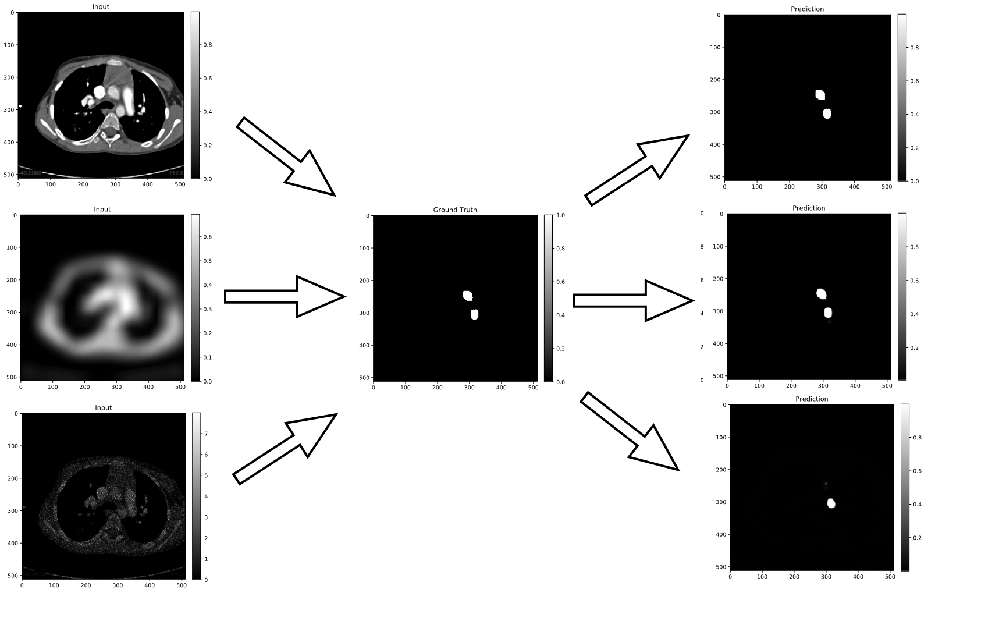

| Paper PDF |

|
Segmentation of the aorta in CT scans is currently a time-consuming and inefficient task. A researcher has to manually annotate each slice by marking the portion of interest. What makes this even tougher is the addition of input noise, such as motion blur or a lack of contrast found in low-dose CT scans. Here, we implement a U-Net to develop an automatic method of segmenting these aorta CT scans. We train the network using the original, blurred (to simulate motion artifacts), and shot noise (to simulate low contrast) with previously labeled data that our lab has purchased. We show that with the inclusion of input noise, the model still performs very well. The figure above shows the original, blurred, and inclusion of shot noise of a single slice in the first column. The second column contains the manually labeled output, and the third column contains the predictions given by the U-net. |
| Paper: |
Code and Data:
|